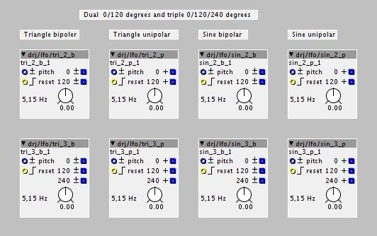

Hey DrJustice , did you remove the preset manager from git ?
DrJustice contributions
DrJustice
#17
^ The preset manager is back.
I don't know why it was gone (but it's a good thing: I want some other objects to be gone, or rather moved to different folders - must talk to Johannes/tb about this).
DrJustice
#18
More members in the family of LFOs
drj/lfo/sin_2_b - dual bipolar sine lfo, 0 and 120 degrees
drj/lfo/sin_2_p - dual unipolar sine lfo, 0 and 120 degrees
drj/lfo/sin_3_b - triple bipolar sine lfo, 0, 120 and 240 degrees
drj/lfo/sin_3_p - triple unipolar sine lfo, 0, 120 and 240 degrees
drj/lfo/tri_2_b - dual bipolar triangle lfo, 0 and 120 degrees
drj/lfo/tri_2_p - dual unipolar triangle lfo, 0 and 120 degrees
drj/lfo/tri_3_b - triple bipolar triangle lfo, 0, 120 and 240 degrees
drj/lfo/tri_3_p - triple unipolar triangle lfo, 0, 120 and 240 degrees
status
Ready to use
description
This is an extension to the family of bipolar and unipolar LFOs, this time with two and three outputs at successively delayed phases, 0, 120 and 240 degrees. All of them have pitch and phase reset inputs.

thetechnobear
#19
you removed it, in this commit... perhaps an accident?
the only disadvantage with removing, rather than moving it you can loose the commit/change history.
so if you need things moved, you can do this directly with git tools, or PM me if you need a hand.
(perhaps worth pointing out to others... if you accidentally delete something we get it back, such is the wonders of version control... nothing is lost  )
)
DrJustice
#20
Ahhh... yes, I should've checked the git history. I did the move from here - seems fine in the repository.
DrJustice
#21
A set of phasors and sine oscillators
drj/osc/phasor_pm_pr_b - bipolar phasor with phase modulation and phase reset
drj/osc/phasor_pm_pr_p - unipolar phasor with phase modulation and phase reset
drj/osc/phasor_pm_s_b - bipolar phasor with phase modulation and sync
drj/osc/phasor_pm_s_p - unipolar phasor with phase modulation and sync
drj/osc/sine_pm_pr_b - bipolar sine osc with phase modulation and phase reset
drj/osc/sine_pm_pr_p - unipolar sine osc with phase modulation and phase reset
drj/osc/sine_pm_s_b - bipolar sine osc with phase modulation and sync
drj/osc/sine_pm_s_p - unipolar sine osc with phase modulation and sync
status
Ready to use
description
A set of phasors and sine oscillators with phase reset/sync and phase modulation. These were "leftovers" from a request, and have basically only been moved into the drj/osc folder and published.
Sputnki
#23
You're very prolific in what you're doing  the sine bipolar with reset is THE THING. I can see (hear) solid kick drums coming
the sine bipolar with reset is THE THING. I can see (hear) solid kick drums coming
pmj
#24
Some great stuff in here but I get this when using drj/osc/quad_sine:
/Users/pmjulian/Documents/axoloti/build/xpatch.cpp:617:46: error: 'freq' was not declared in this scope
MTOFEXTENDED(param_pitch + inlet_pitch,freq);
^
./axoloti_math.h:126:3: note: in definition of macro 'MTOFEXTENDED'
frequency= (r< ^
/Users/pmjulian/Documents/axoloti/build/xpatch.cpp:624:16: error: 'freq' was not declared in this scope
Phase += freq + inlet_fm[buffer_index];
^
make: *** [/Users/pmjulian/Documents/axoloti/build/xpatch.bin] Error 1
shell task failed, exit value: 2
This is under 1.0.9

DrJustice
#26
Misc objects and some updates
drj/audio/out_stero_vol - output with volume control and 6dB gain
drj/ctrl/dial_pitch - dial with pitch mapped output
drj/ctrl/fadein_xor - fade/difference control
drj/ctrl/fadeout_xor - fade/difference control
drj/math/> const i - compare to constant integer
drj/math/< const i
drj/math/== const i
drj/math/!= const i
drj/math/glide_fast - a faster glide module
drj/math/keyscaler - keyboard breakpoint sand scale
drj/math/offset_scale_1 - out = offset + (in * scale)
drj/math/offset_scale_2 - out = offset + (in * scale), s-rate
drj/lfo/tri_ph_b - updated triangle LFOs, added phase input
drj/lfo/tri_ph_u
drj/midi/clock_rx - MIDI clock and tranport control receiver
drj/midi/clock_tx - MIDI clock and tranport control transmitter
drj/midi/note_tx - note transmitter with live channel control
status
Ready to use
description
This is an accumulation of various objects, and also two updated LFOs

DrJustice
#27
MIDI/clock syncable delays and LFO
drj/delay/read_sync - delay reader with sync and modulation
drj/delay/read_interp_sync - interpolated delay reader with midi/clock sync and modulation
drj/delay/read32_sync - delay reader with sync and modulation, 32 bit
drj/delay/read32_interp_sync - interpolated delay reader with midi/clock sync and modulation, 32 bit
drj/lfo/lfo_sync - multi waveform LFO with midi/clock sync
status
Ready to use
description
Two 16 bit readers (one is interpolated), two 32 bit readers, and an LFO which can be synced to a clock pulse or to MIDI clock. The modules are phase locked to the sync source.
The delays have both an absolute time input (as for the original delays) and a proportional time modulation input.
The 24PPQ clock input doesn't have to be 24 Pulses Per Quarter note - it's just labelled that way for the sake of convention. The MIDI and 24PPQ clocks can be divided down using the clockdiv parameter.

LFO midi clock phase lock
DrJustice
#28
Berlin School Bonanza
drj/seq/seq_clk - step sequencer clock controller
drj/seq/seq_clk_sync - step sequencer clock controller with midi/clock sync
drj/seq/pattern_selector - 4 way syncable step sequencer pattern selector
drj/seq/stepseq_4_b - bipolar value * 4 selector
drj/seq/stepseq_4_u - bipolar value * 4 selector
drj/seq/stepseq_4_pitch - bipolar value * 4 selector
drj/seq/stepseq_4_switch - switch * 4 selector
drj/seq/stepseq_8_b
drj/seq/stepseq_8_u
drj/seq/stepseq_8_pitch
drj/seq/stepseq_8_switch
drj/seq/stepseq_16_b
drj/seq/stepseq_16_u
drj/seq/stepseq_16_pitch
drj/seq/stepseq_16_switch
status
Ready to use
description
This is a set of objects to facilitate the mechanics of berlin school sequencing,
The emphasis is on performance controllability and fun factor. Therefore every control is accessible so it can be bound to MIDI CC, either on knobs directly or via control objects connected to the performance inputs.
The core is the sequencer clock controller. This controls the how the steps are played in a number of ways. The clock is syncable to MIDI or to a clock pulse input, as well as having an internal clock. The sequencer step value blocks use dials in order to make them CC assignable.
There are a few patches that demonstrate the use of these objects. These patches make use of a delay sub patch which will described separately:
drj/seq/seq_test_1.axp - drj/seq/seq_test_7.axp
Here is one of the examples performance sequencer patches, seq_test_6.axo:

DrJustice
#29
Stereo delay sub patches
drj/delay/delay_st_pp.axs - stereo/ping-pong delay
drj/delay/delay_st_pp_mod.axs - stereo/ping-pong modulation delay
drj/delay/delay_st_pp_sync.axs - stereo/ping-pong midi/clock syncable delay
drj/delay/delay_st_pp_mod_sync.axs - stereo/ping-pong midi/clock syncable modulation delay
status
Ready to use
description
This is a set of 'studio' style stereo delay effects. The come in four variants to cover modulation and midi/clock sync. The default max delay time is 1.36 seconds - edit the sub patch to change that.

Using axoloti for MIDI syncable stereo/ping pong delay?
rbrt
#31
really really nice!
...but any idea how to set a certain step of the 'stepseq_16_switch'
from the 'outside' ?
for example via an additional input 'set step',
the 'parameter_s1' in your object will
be set to the value of 'set step' if inlet_step == 1 ,
the 'parameter_s2' in your object will
be set to the value of 'set step' if inlet_step == 2 ,
and so on...
DrJustice
#32
Setting parameters from module code can be done to a degree, but not reliably (the issue of parameter access is being discussed elsewhere). The method you describe could be implemented, but the buttons would not reflect the step enables taken from the dedicated input.
An alternative module could be made for this, not using the current button parameters, but making a switch module that is meant for external control. It could have a display to reflect the state of the switches. In that case the design is open for implementing your suggestion and any useful additions, while still being controllable by MIDI CC (an explicit goal of these modules). One could also use momentary buttons for toggling the step enables and then use a display element to reflect the states - that would accommodate your suggestion while keeping the display up to date.
rbrt
#33
Ah!
Setting parameters from module code can be done to a degree, but not
reliably (the issue of parameter access is being discussed elsewhere)
...just found the thread,but it's a bit to DEEP for me at the moment...
It could have a display to reflect the state of the switches.
how could that be done,practically ?
anyway,I got to where I wanted to get by using a 16 - sample buffer,
but this approach doesn't reflect the actual sequence in the patcher UI,
AND, more important, the buffer is not visible to your 'preset manager' (which is simply GREAT)
(you can save/load the buffer to sd-card anyway,so it's working as I meant it to)
so,conclusion,it would be great to have a SIMPLE way to set UI elements programatically...
DrJustice
#34
PWM LFOs
drj/lfo/lfo_pwm_b - bipolar PWM LFO
drj/lfo/lfo_pwm_u - unipolar PWM LFO
status
Ready to use
description
LFOs with PWM outputs and pitch, phase, pulse width and reset inputs.

DrJustice
#35
MIDI NRPN receivers
drj/midi/nrpn_rx_multi - multi output NRPN receiver
drj/midi/nrpn_rx_multi2 - multi parameter, multi output NRPN receiver
drj/midi/nrpn_rx_f - fractional output NRPN receiver
drj/midi/nrpn_rx_i - integer output NRPN receiver
status
Ready to use
description
A set of MIDI Non Registered Parameter Number receivers. The "multi" variants are for advanced use where on might want some or all of the value formats, as well as triggered reception.
The chmsb outputs generates a pulse when the MSB portion of the NRPN value is received, and the chlsb output generates a pulse when the LSB portion of the NRPN value is received - the latter indicates the complete reception of a 14 bit value, when both the MSB and LSB values have been received, and can be used to ensure the integrity of the full 14bit discrete value.
The multi2 variant receives all NRPNs and has an nrpn otutput to indicate the last received one, whereas the other variants receives only the NRPN set by the nrpn attribute.

{kind=link}
{kind=link}
{kind=link}